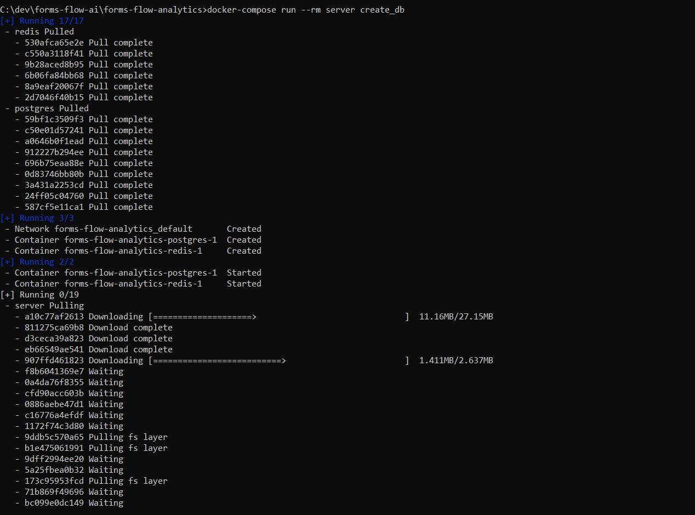
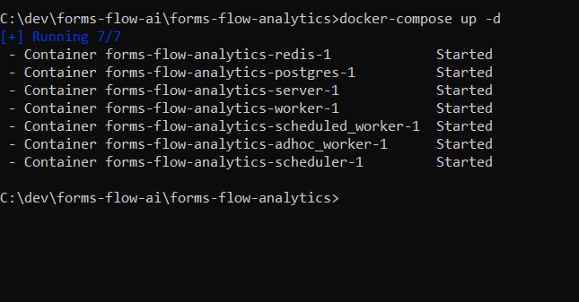
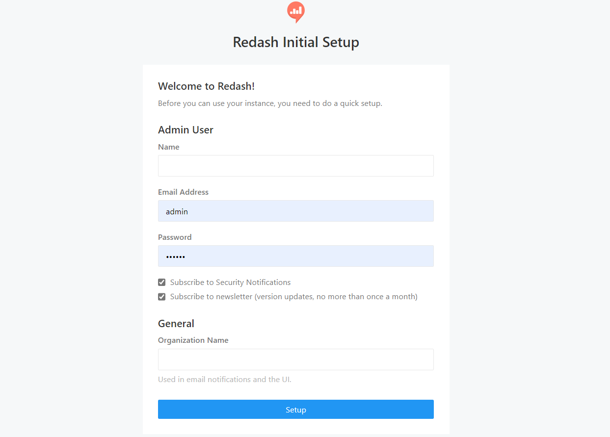

<article class="docs-article">
    <section class="docs-section" id="formsflow analytics">
        <div>
            <h1 id="analytics-engine">Analytics Engine</h1>
<hr>
            <p><strong>Formsflow.ai</strong> leverages <a
                    href="https://github.com/getredash/redash">Redash</a> to build interactive
                dashboards and gain insights. To create meaningful visualization for
                your use case with formsflow.ai checkout <a href="https://redash.io/help/">Redash
                    Knowledge base</a>.</p>

            <h2 id="prerequisites">Prerequisites</h2>
            <ul>
                <li>For docker based installation <a href="https://docker.com">Docker</a> need to be
                    installed.</li>
                <li>Admin access to <a href="../forms-flow-idm/keycloak">Keycloak</a> server.</li>
            </ul>

            <h3 id="installation">Installation</h3>
            <hr>
            <ul>
                <li>Make sure you have a Docker machine up and running.</li>
                <li>Make sure your current working directory is
                    &quot;forms-flow-ai/forms-flow-analytics&quot;.</li>
                <li>Rename the file <strong>sample.env</strong> to <strong>.env</strong>.
                </li>
                <li>Modify the environment variables inside <strong>.env</strong> file if
                    needed. Environment variables are given in the table below</li>
                <div class="callout-block callout-block-info">
                    <div class="content">
                        <span class="callout-icon-holder me-1"></span>

                        <i class="fa fa-bullhorn"></i>

                        <strong>NOTE :</strong> <code>{your-ip-address}</code> given inside the .env
                        file should be changed to your host system
                        IP address. Please take special care to identify the correct IP address if
                        your system has multiple network cards

                    </div>

                </div>

            </ul>

            </img>
            <br><br>
            <p>* <code>REDASH_HOST</code></p><br>
            <h3 id="running-the-application">Running the application</h3>
            <ul>
                <li>Analytics service uses port 7000, make sure the port is available.</li>
                <li><code>cd {Your Directory}/forms-flow-ai/forms-flow-analytics</code></li>
            </ul>
            <blockquote>
                <p>The forked version of redash is being used to overcome the limited cors support
                    in redash. The forked repo fixes the cors issues. But if the environment is
                    setup in such a way that redash resides in the same url origin as forms web
                    application , redash can be built from any redash images.</p>
            </blockquote>
            <ul>

                <li>Run
                    <code>docker-compose run --rm server create_db</code>
                    to setup database and to create tables.
                </li>
                <br></img><br>
                <li>Run <code>docker-compose up -d</code> to
                    start.</li><br>
                    </img>
            </ul>
            </li>

            </ul>
            <div class="callout-block callout-block-info">
                <div class="content">
                    <span class="callout-icon-holder me-1"></span>

                    <i class="fa fa-bullhorn"></i>

                    <em>NOTE: Use --build command with the start command to reflect any future
                        <strong>.env</strong> changes eg :
                        <code>docker-compose up --build -d

                        </code></em>

                </div>

            </div>

            <h4 id="to-stop-the-application">To stop the application</h4>
            <ul>

                <li>Run <code>docker-compose stop</code> to
                    stop.</li>
            </ul>

            </ul>
            <h3 id="health-check">Health Check</h3>
            <ul>
                <li>Check the public endpoint : <code>{your-ip-address}:7000/ping</code></li>
            </ul>
            <br></img><br><br>
            
            <ul>
                <li>The application should be up and available for use at port defaulted to 7000 in
                    <a href="http://localhost:7000/">http://localhost:7000/</a> and register with
                    any valid credentials.
                </li>
            </ul>
            <br>
            <h3 id="get-the-redash-api-key">Get the Redash API Key</h3>
            <hr>
            <ul>
                <li>Login to redash hosted instance (i.e. <a
                        href="http://localhost:7000/">http://localhost:7000/</a>) using the admin
                    credentials passed for registration / SAML credentials</li>
                <li>Go to User Icon -&gt; Profile -&gt; Settings<ul>
                        <li>Go to Account Section</li>
                        <li>Copy API Key to Clipboard</li>
                    </ul>
                </li>
            </ul>


        </div>
    </section>
    </article>
